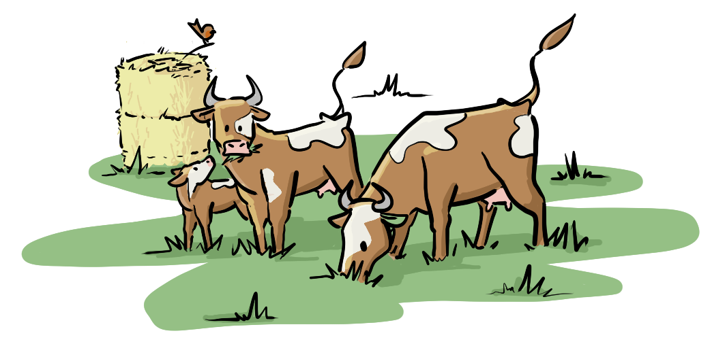
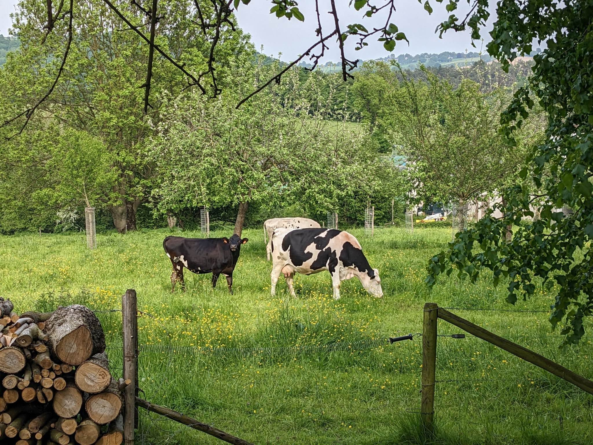
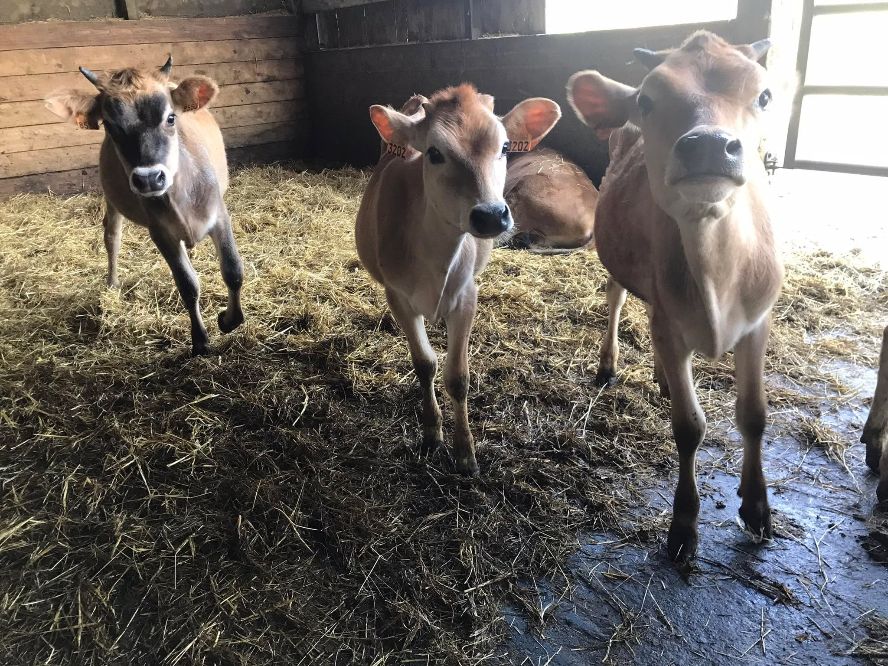
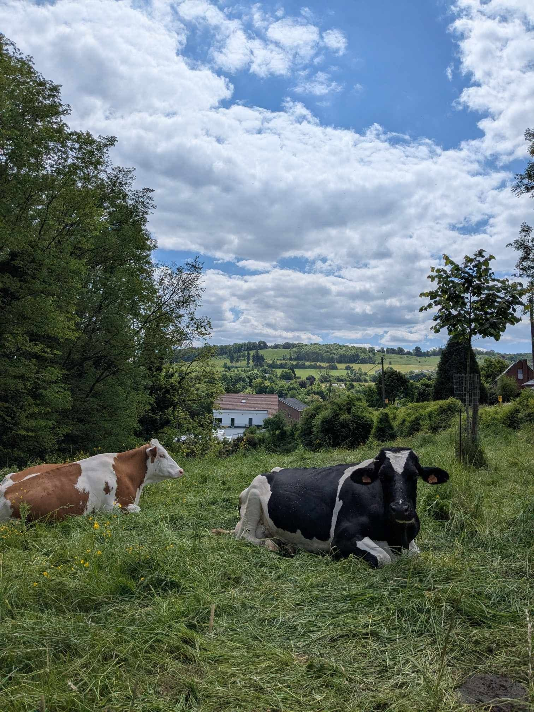

Un troupeau redimensionné 🐄
Aujourd'hui, le troupeau compte entre 50 et 60 vaches laitières, mais notre objectif est de le ramener à un format plus raisonné de 25 à 30 vaches. Cette diminution volontaire nous permet de libérer de l'espace essentiel pour développer les autres activités de la ferme.
Le lait récolté sera valorisé selon un système hybride : il sera en partie directement transformé à la ferme et en partie vendu à une laiterie coopérative.
Le choix d'une race mixte : lait et viande 🥛🥩
Nous allons faire évoluer le troupeau vers une race mixte, capable de produire à la fois du lait et de la viande. Ces vaches produisent certes moins de lait que des vaches laitières spécialisées (environ 5 000 kg de lait par an contre plus de 8 000 kg), mais elles offrent en contrepartie une bien meilleure valorisation bouchère pour les vaches de réforme et les veaux.
Les races mixtes se distinguent également par leur grande rusticité, leur longévité et leur capacité à valoriser efficacement les fourrages produits sur notre ferme. Elles nous permettront ainsi de conserver les animaux plus longtemps dans le troupeau et de réduire, voire de supprimer, notre dépendance aux aliments achetés.
Une gestion respectueuse et équilibrée 🌱
Nos vaches joueront un double rôle : elles seront à la fois laitières et allaitantes pour leurs veaux. Concrètement, elles seront traites uniquement le matin. Pendant la journée, les veaux rejoindront leurs mères pour téter librement en prairie.
En fin d'après-midi, ils seront séparés afin que le lait produit durant la nuit puisse être collecté lors de la traite du lendemain matin. Cette organisation en monotraite nous offre une bien meilleure qualité de vie et permet aux veaux de grandir paisiblement auprès de leur mère en exprimant leurs comportements naturels.


